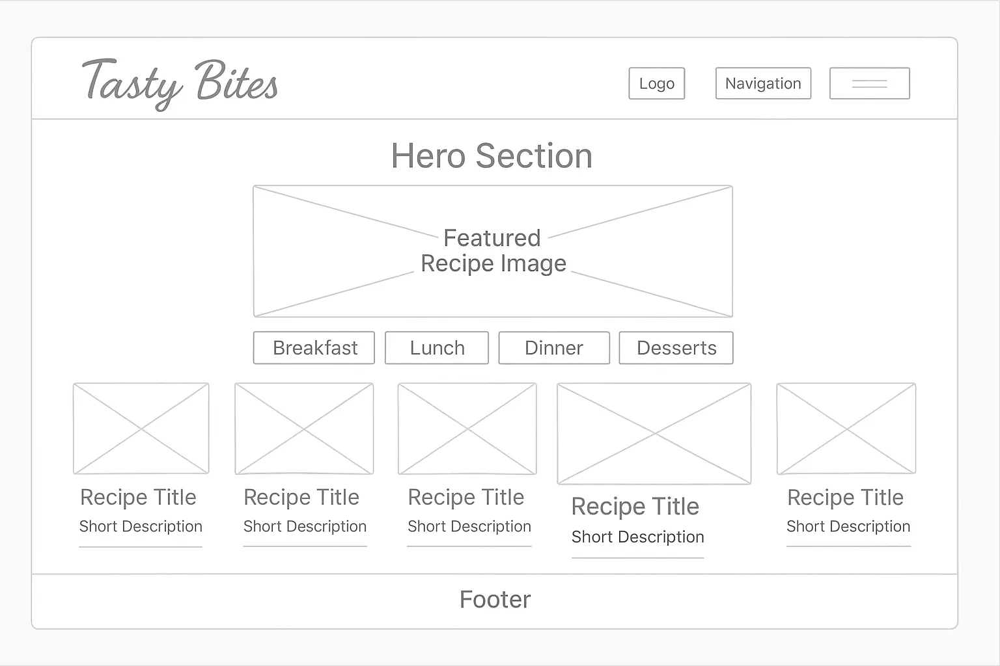
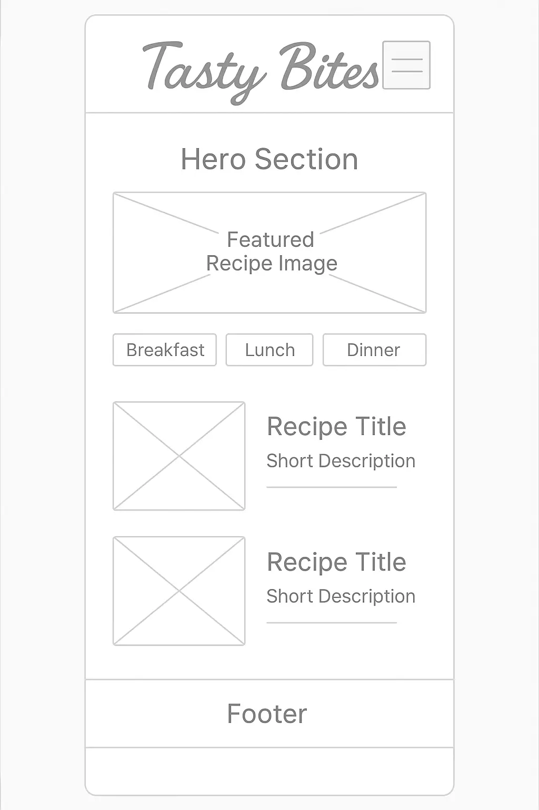

Name: Tasty Bites
Reason: The name Tasty Bites reflects the website’s focus on sharing delicious, bite-sized recipes that are easy to follow and enjoyable to cook. It’s catchy, memorable, and hints at quick, tasty meals or treats.
Tasty Bites is a small, user-friendly website designed to showcase a curated collection of favorite recipes. The site organizes recipes into categories such as Breakfast, Lunch, Dinner, and Desserts. Each recipe includes a title, ingredients list, step-by-step instructions, and optionally, images for better guidance. This site aims to provide inspiration and practical cooking instructions for home cooks of all levels.
| Color Name | Hex Code | Usage |
|---|---|---|
| Warm Orange | #F28C28 | Primary accent color — headings, buttons, links |
| Soft Cream | #FFF8E7 | Background color — page background, recipe cards |
| Dark Charcoal | #333333 | Text color — body text, headings |
Explanation: Warm Orange evokes appetite and energy, perfect for a food-related site. Soft Cream provides a gentle, inviting background that is easy on the eyes. Dark Charcoal ensures excellent readability for all textual content.
| Font Name | Usage |
|---|---|
Poppins |
Headings (h1, h2, h3) |
Roboto |
Body text, paragraphs, ingredients lists |
Pacifico |
Logo / Site name (optional decorative font) |
Explanation:
Poppins offers a clean, modern look for headings.Roboto is highly readable for paragraphs and lists.Pacifico adds a friendly, hand-written touch to the logo or site name, making it more personal.

Note: Clicking on a recipe card opens a modal overlay with full recipe details: ingredients, steps, and larger images.
h1 with logo font)ul with li for categories)article elements or section with each recipe as an article)
h2)img) with alt textul)ol or p)Poppins for headings with font-weight bold.Roboto for paragraph text and lists.Pacifico, styled distinctively.